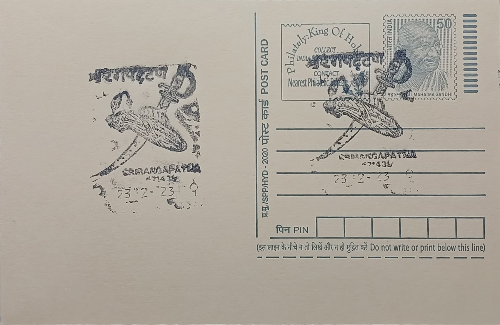

Crown and Sword of Tipu Sultan
ಟಿಪ್ಪು ಸುಲ್ತಾನನ ಕಿರೀಟ ಮತ್ತು ಖಡ್ಗ


The crown and sword of Tipu Sultan are not relics of legend but documented objects of the Mysore royal armoury, their renown resting on the manner of their loss rather than any founding myth. When British East India Company troops under General George Harris and Major General David Baird breached the fortress walls of Srirangapatna on 4 May 1799 during the Fourth Anglo-Mysore War, Tipu Sultan was found dead near the Water Gate, and his personal regalia, arms and treasury were seized within hours as spoils of war. Unlike many Indian royal emblems that descend through centuries of dynastic succession, these particular objects owe their present fame largely to that single violent transfer of ownership, which turned palace possessions into imperial trophies almost overnight.
As symbols of Mysore's royal authority, the crown and sword occupy a distinct place in the material history of pre-colonial Indian resistance to British expansion. Tipu Sultan, who ruled Mysore from 1782 until his death, was among the few Indian rulers to inflict repeated reverses on Company forces, and his personal effects consequently carried outsized symbolic weight for both sides: for the British, proof of a dangerous adversary finally overcome, and for later Indian nationalist memory, emblems of a ruler who died fighting rather than submitting. The sword in particular, found in his bedchamber beside the hammock in which he reportedly slept, bears gold calligraphic inscriptions invoking divine qualities, a feature typical of high-status Mysore court weaponry of the period and one that has been cited in subsequent scholarly and auction-house assessments of its authenticity.
Following the fall of Srirangapatna, the sword was presented to Major General Baird as a personal token of the campaign's success and remained in his family's possession for generations, surfacing publicly only in 2003 when it was sold at a London auction house, then known as Dix Noonan Webb, for roughly £150,000. Other items from Tipu's armoury and throne, including a gold tiger-head finial, firearms and a ceremonial cannon, were similarly dispersed into private British collections and museums such as the Victoria and Albert Museum and the Royal Collection, which still holds pieces acquired directly from the 1799 prize distribution. Many of these objects display the tiger-stripe bubri motif that Tipu adopted as his personal emblem, a design also visible today on the ceiling of his mausoleum, the Gumbaz, within the Srirangapatna fort complex.
A defining episode in the sword's modern history came in 2004, when the Bangalore industrialist Vijay Mallya purchased it at a London auction for approximately Rs 1.5 crore and brought it to India, intending to display it alongside other recovered Tipu memorabilia at Srirangapatna. Customs and import complications, however, led to prolonged disputes over duty payments, and for some years the sword was held up in bureaucratic limbo rather than placed on public exhibition as originally planned. The episode drew wide attention in the Indian press as an example of the difficulties surrounding the repatriation of colonial-era artefacts, even when a willing Indian buyer had already secured the object at auction.
Interest in Tipu's regalia resurfaced dramatically in 2024, when another of his personal swords, the so-called bedchamber sword held in Baird family descent, sold at Bonhams in London for £14 million, a record price for an Indian or Islamic artefact at auction, reigniting public debate in Karnataka and across India over the return of such objects. The Daria Daulat Bagh palace museum within Srirangapatna, maintained by the Archaeological Survey of India, continues to display surviving arms, coins and personal belongings associated with Tipu and his father Hyder Ali, giving visitors to the post office's own locality a tangible link to the ruler commemorated on the cancellation. The crown and sword themselves remain scattered between private hands and institutional collections abroad, their periodic reappearance at auction serving as the main occasion on which their history is retold to a wider public.
| Date of Introduction | June 20, 1987 |
|---|---|
| Address | Senior Postmaster, |
| Srirangapatna HO, | |
| Mandya (dt.), Karnataka - 571438. |